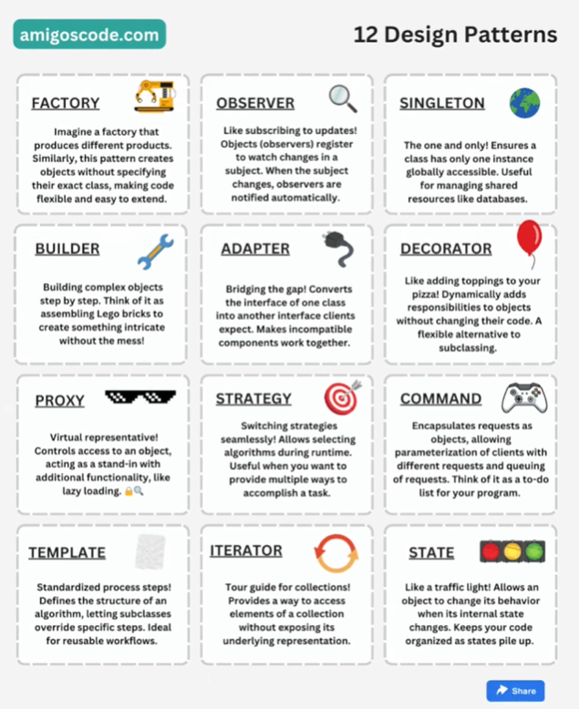

System Design, Higher Level, and Software Design Patterns
List the pros and cons of microservices
How to determine what Context Boundaries
What is a distributed system
Discuss the two ways to scale a system
- Horizontal - Adding more features to a single server
- Vertical - Adding more servers
Talk about deployment strategies
- Rolling Deployments: Updates are gradually rolled out to a small subset of servers at a time.
Once a batch is verified to be stable, the next batch is updated, and so on, until the entire fleet is on the new version.
- - black hot drink
- Canary Deployments - A small percentage of users (canary group) are directed to the new version first.
Performance and user feedback are closely monitored for the canary group before rolling out the update to a larger user base.
- - white cold drink
- Blue-Green Deployments: Maintains two identical production environments (Blue and Green). The update is deployed to the Green environment first.
Once thoroughly tested and validated, traffic is switched over from Blue to Green, effectively making the new version live.
- - white cold drink
Discuss the different approaches with load balancing
- Static Load Balancing Algorithms: Keep things simple: Static algorithms don't consider the current workload on servers. They rely on pre-defined rules to distribute traffic.
- - Round Robin: Requests are sent to servers in a circular fashion, ensuring a fair distribution of traffic.
- - Random: Requests are randomly assigned to any available server.
- Dynamic Load Balancing Algorithms::More intelligent: These algorithms take real-time server health and workload into account when distributing traffic.
- - Least Connections: Sends requests to the server with the fewest active connections, aiming for even workload distribution.
- - Source IP Hash: Uses the client's IP address to determine the destination server. This ensures users are connected to the same server for consistent sessions.
- - Resource-Based: Analyzes server resources like CPU and memory usage to distribute traffic to servers with enough capacity.
How can you handle increased traffic on a horizontally scaled system?
Design Patterns
